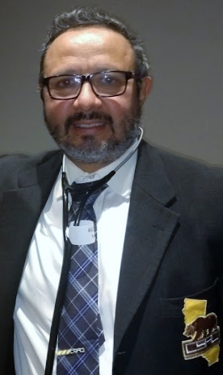

Unity Community Initiative (UCI) started as the brainchild of college senior,
Dylan Howard, who was looking for a way to empower future students and communities.
The purpose of UCI is to influence the upcoming generation to become law-abiding
citizens that give back to their community and country. By helping stimulate young minds to
be an influential part of their community and give back, Unity Community Initiative will help
communities unite and progress through grassroot movements.
How We Accomplish Our Goal:
We accomplish our goal by providing stimulating scholarships to young college students that require them to research and provide a way that will benefit a specific city or community. After a winner is chosen, we give them the opportunity to see their idea come to fruition if within our means.
Meet the BoardSteven Romero was recently named the brand new Chief of Police of Ontario, Oregon. Romero started his career as a police officer in 1989 for the Los Angeles Police Department until 1993 when he then transferred to the Hawthorne Police Department, also in the heart of Los Angeles. Before being named the Chief of Police, Romero worked as a Lieutenant overseeing 90 police officers and 40 civilian employees, all while helping the community. Romero grew up doing a variety of activities, among those is his favorite sport wresting. Romero has competed for state titles and for over 15 years has been the head coach of the La Habra Cobras Wrestling team.
Robert Ruelaz MD FHRS is a board certified Cardiovascular specialist and Cardiac Electrophysiologist. His specialty involves treatment of arrhythmia disorders. He practices in Southern California. He received a B.S. cum laude in Electrical Engineering from California State Polytechnic University, Pomona, and worked as an electrical engineer for a few years. He decided to change his career so that he could more directly help people live better lives. He received his medical degree from Harvard Medical School in 2000. He also is an official of the California State Athletic Commission and works as ringside physician. He stays active surfing, snowboarding, and boating.
Nathan Adam started his career as a screenwriter, writing for many top Hollywood producers. Writing was the catalyst that helped him begin producing and directing. A career highlight of Adams was producing and co-directing award winning documentary Winning: The Racing Life of Paul Newman which featured individuals such as Robert Redford, Tom Cruise, Robert Wagner, Joanne Woodward, Patrick Dempsey, Jay Leno and Mario Andretti. Adams also produced the feature film Road Hard based on the life of a stand-up comedian. It raised 1.5 million dollars through crowd-funding through viral videos featuring Adam Carolla and Bryan Cranston. Growing up, Nate enjoyed wrestling, especially in Montana and wrestled through college and still wrestles today.